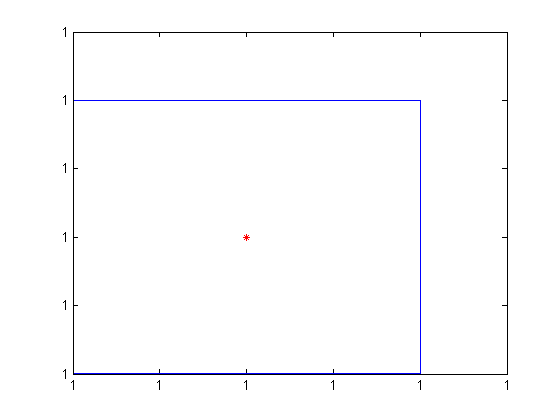
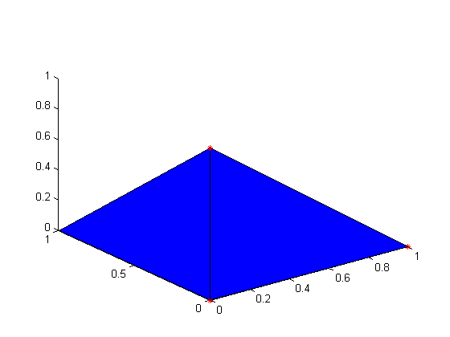
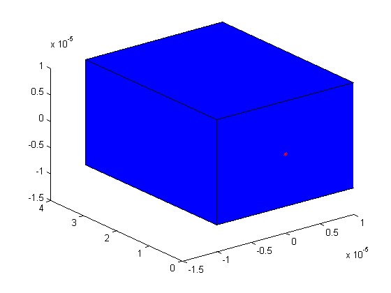
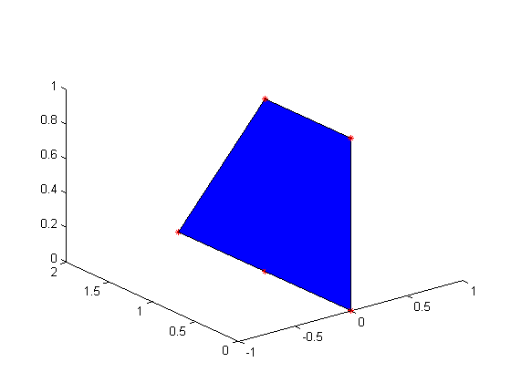

% demo_convex_hull global GLOBAL_APPROX_PARAM GLOBAL_APPROX_PARAM = parameters(1); GLOBAL_APPROX_PARAM.hull_flag = 'convexhull';
0-D in 2-D space
Case 1
a = [1;1]; v = vertices(a); p = polyhedron(v); plot(a(1,:), a(2,:), 'r*', 'MarkerSize',5); plot(p);
Warning: CONVEX_HULL case 1: - the hull is expanded to full dimension!
3-D set in 3-D space
Case 2
clf a = [0 0 0; 0 1 0; 1 0 0; 0 0 1]'; v = vertices(a); p = polyhedron(v); plot3(a(1,:), a(2,:), a(3,:), 'r*', 'MarkerSize',5); hold on; plot(p);
1-D set in 4-D space
Case 3
a = [0 0 0 0; 0 1 0 0; 0 2 0 0; 0 1 0 0; 0 4 0 0]'; v = vertices(a); p = polyhedron(v);
Warning: CONVEX_HULL Case 3: leads to a hull of dimension 1 - the hull is expanded to full dimension!
1-D set in 3-D space
Case 3
clf; a = [0 0 0 ; 0 1 0 ; 0 2 0; 0 1 0; 0 4 0]'; v = vertices(a); p = polyhedron(v); plot3(a(1,:), a(2,:), a(3,:), 'r*', 'MarkerSize',5); hold on; plot(p);
Warning: CONVEX_HULL Case 3: leads to a hull of dimension 1 - the hull is expanded to full dimension!
2-D set in 3-D space
Case 4
clf; a = [0 0 0; 0 1 0; 0 0 1; 0 2 0; 0 1 1]'; v = vertices(a); p = polyhedron(v); plot3(a(1,:), a(2,:), a(3,:), 'r*', 'MarkerSize',5); hold on; plot(p);
2-D set in 4-D space
Case 5
a = [0 0 0 0; 0 1 0 0; 0 0 1 0; 0 2 0 0; 0 1 1 0]'; v = vertices(a); p = polyhedron(v);
Warning: CONVEX_HULL Case 5: leads to a hull of dimension 2 - the hull is expanded to full dimension!